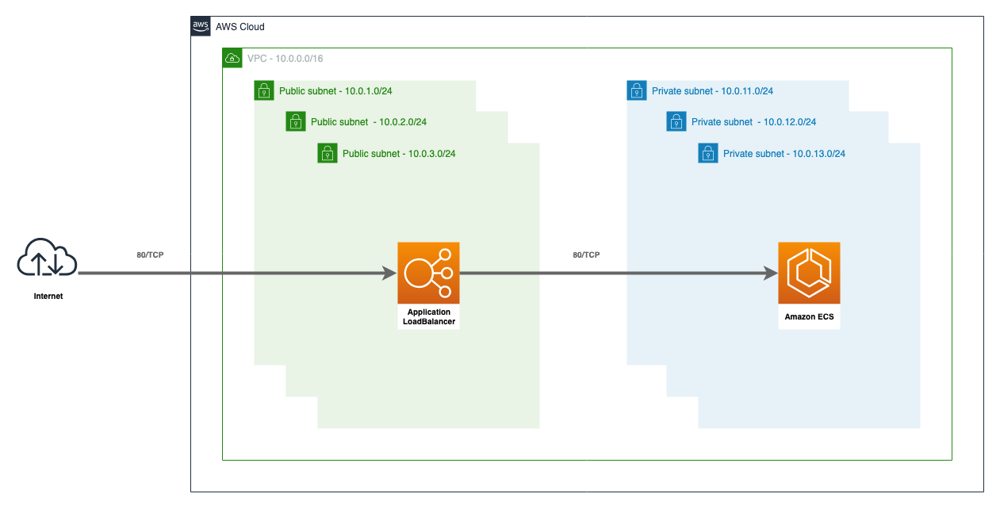
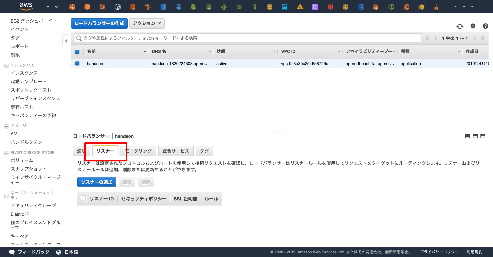
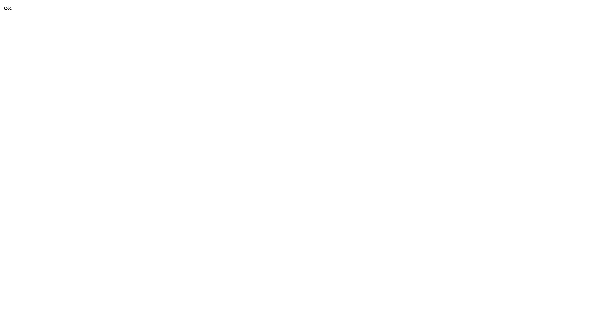
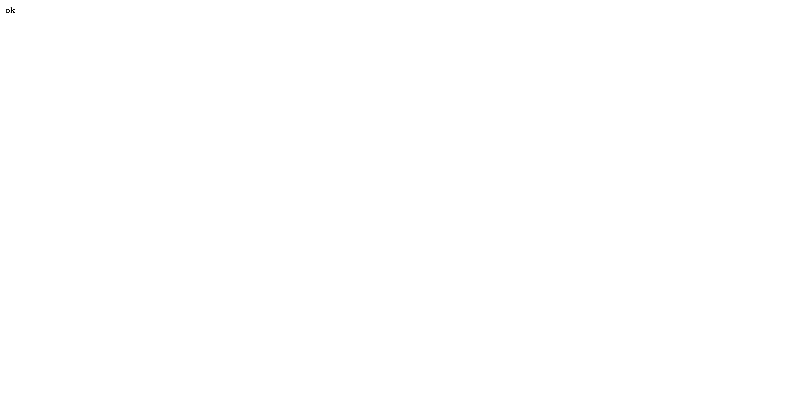

ALB
この章の目標¶

ALB¶

上記の図が目標となる構成です。ネットワークは簡略化しています。
httpリクエストを受け付けるロードバランサ(ALB)と、そのALBへのhttpリクエストを許可するセキュリティグループを作成します。
# SecurityGroup # https://www.terraform.io/docs/providers/aws/r/security_group.html resource "aws_security_group" "alb" { name = "handson-alb" description = "handson alb" vpc_id = "${aws_vpc.main.id}" # セキュリティグループ内のリソースからインターネットへのアクセスを許可する egress { from_port = 0 to_port = 0 protocol = "-1" cidr_blocks = ["0.0.0.0/0"] } tags = { Name = "handson-alb" } } # SecurityGroup Rule # https://www.terraform.io/docs/providers/aws/r/security_group.html resource "aws_security_group_rule" "alb_http" { security_group_id = "${aws_security_group.alb.id}" # セキュリティグループ内のリソースへインターネットからのアクセスを許可する type = "ingress" from_port = 80 to_port = 80 protocol = "tcp" cidr_blocks = ["0.0.0.0/0"] } # ALB # https://www.terraform.io/docs/providers/aws/d/lb.html resource "aws_lb" "main" { load_balancer_type = "application" name = "handson" security_groups = ["${aws_security_group.alb.id}"] subnets = ["${aws_subnet.public_1a.id}", "${aws_subnet.public_1c.id}", "${aws_subnet.public_1d.id}"] }
コードの適用を行うとリソースが2つ追加されれば成功です。
# terraform plan : Plan: 3 to add, 0 to change, 0 to destroy. : # terraform apply :
コンソール上で確認するとALBが起動していて、DNSを確認することが出来ます。
ただし、この時点ではロードバランサの設定(リスナーの追加)を行っていないためALBにアクセスできません。
"リスナー" を確認すると設定が1つもないことを確認することができます。

リスナーの設定¶
ALBに登録されているDNSへhttpでアクセスすると "ok" の固定レスポンスを返すようにしましょう。
"ok" を返すためにはALBのリスナーの設定を追加する必要があります。
Terraformでその設定を追加しましょう。
# Listener # https://www.terraform.io/docs/providers/aws/r/lb_listener.html resource "aws_lb_listener" "main" { # HTTPでのアクセスを受け付ける port = "80" protocol = "HTTP" # ALBのarnを指定します。 #XXX: arnはAmazon Resource Names の略で、その名の通りリソースを特定するための一意な名前(id)です。 load_balancer_arn = "${aws_lb.main.arn}" # "ok" という固定レスポンスを設定する default_action { type = "fixed-response" fixed_response { content_type = "text/plain" status_code = "200" message_body = "ok" } } }
コードの適用を行うとリソースが1つ追加されれば成功です。
# terraform plan : Plan: 1 to add, 0 to change, 0 to destroy. : # terraform apply :
ALBがhttpを受け付けるようになったことを確認します。

ALBのDNSへアクセスし、 "ok" が返ってくることを確認しましょう。
 
